大理 - 白族风情
观光景点
大理古城 - 保存完好的白族风格古城
洱海 - 高原明珠，骑行环湖最佳体验
崇圣寺三塔 - 大理标志性佛教建筑
美食推荐
乳扇 - 白族特色奶制品，可炸可烤
酸辣鱼 - 洱海鱼烹制的特色菜肴
喜洲粑粑 - 传统白族烤饼
路况信息
古城周边道路较窄，旺季容易拥堵
环洱海路况良好，适合骑行
电动车租赁
古城南门附近有多家电动车租赁，60-100元/天
"洱海骑行"提供电动车+充电宝组合租赁
丽江 - 纳西族风情
观光景点
丽江古城 - 世界文化遗产，纳西族传统建筑
玉龙雪山 - 壮丽的雪山景观
束河古镇 - 比大研古镇更原生态的纳西小镇
美食推荐
丽江粑粑 - 纳西族传统面食
腊排骨火锅 - 丽江特色火锅
鸡豆凉粉 - 纳西族特色小吃
路况信息
古城内为步行区，禁止机动车通行
通往玉龙雪山道路弯多坡陡，需谨慎驾驶
电动车租赁
古城周边有电动车租赁，约80-120元/天
"雪山电动车"提供古城至白沙古镇的骑行路线
芒市
行程
10月18日
落地
→
新玩厂夜市
→
白云洗头屋
10月19日
10点出门
早上：
银家早点
→
团结大街(打卡拍照)
→
宏利综合市场
中午：
晚上：
傣族古镇
→
容容家洗头
10月20日
早上：
阿妙餐厅
→
妆造
→
银塔拍照
中午：
晚上：
金塔拍照
→
容容家洗头
10月21日
早上：
阿妙餐厅
中午：
晚上：
钱家傣味食馆
美食
傣味：
爽爽苦子撒
爽爽苦子撒
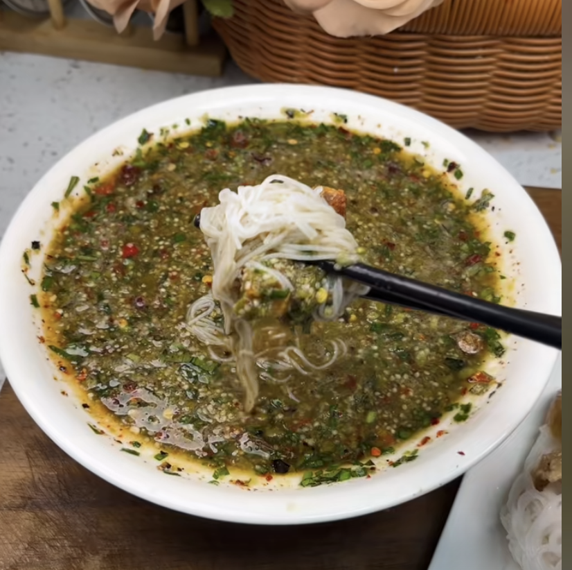芒市最地道的傣味餐厅之一，特色菜苦子撒是当地传统美食，由苦子、猪肉和各种香料制成，味道独特，略带苦味但回味甘甜。推荐尝试他们的苦子撒和柠檬撒。
钱家傣味食馆
钱家傣味食馆
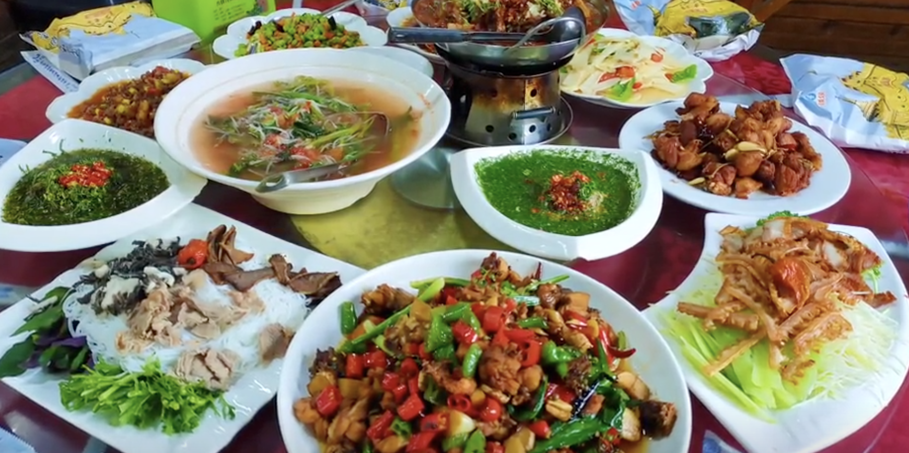 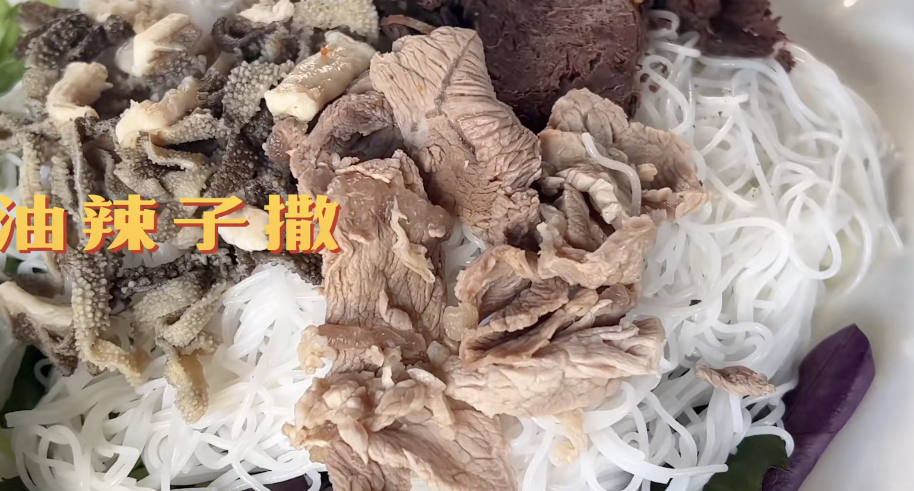
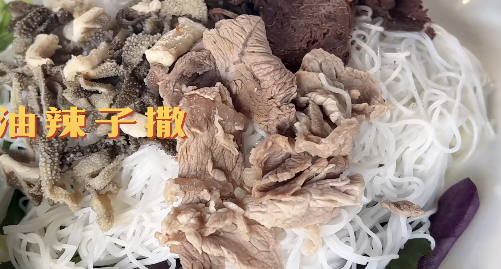
老字号傣味餐厅，环境朴素但味道正宗。招牌菜有香茅草烤鱼、菠萝饭和酸笋煮鸡。价格实惠，分量足，是体验傣族家常菜的好去处。
梦幻傣家
梦幻傣家
 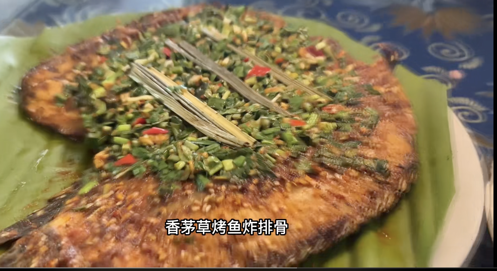
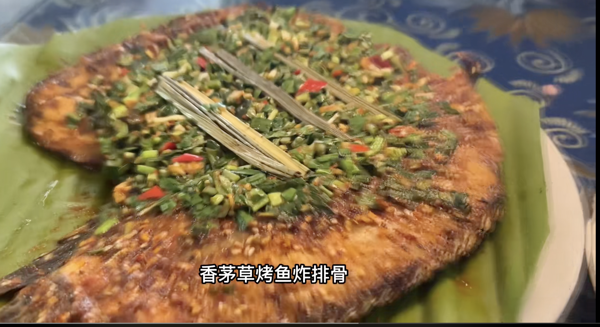
装修具有浓郁傣族风格的餐厅，提供改良版的傣族菜肴，适合不太能接受重口味的游客。推荐他们的傣味拼盘，可以一次尝到多种特色菜。
烧烤：
芒店一元烧烤村
芒店一元烧烤村


芒市著名的烧烤夜市，特色是1元一串的小肉串，种类丰富，有牛肉、猪肉、鸡翅等。环境热闹，适合晚上和朋友一起喝酒吃烧烤。
平莹烧烤店
平莹烧烤店

本地人常去的老牌烧烤店，特色是秘制腌料的烤鱼和烤鸡脚。调料独特，辣度可选，建议尝试他们的招牌烤罗非鱼。
秀华建水菊花烧烤店
秀华建水菊花烧烤店

来自云南建水的特色烧烤，以菊花为配料是其独特之处。推荐尝试菊花烤豆腐和烤五花肉，蘸料是店家特制的腐乳酱。
小吃店：
莎姐很辣
莎姐很辣
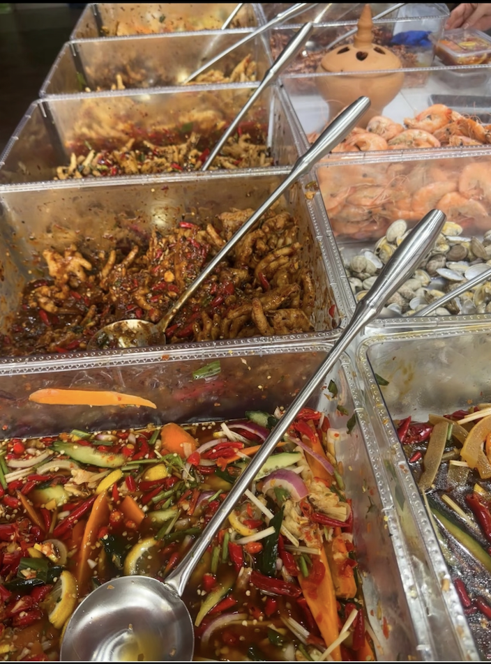专营各种辣味小吃的店铺，招牌是凉拌芒果和辣鸡脚，辣度分为微辣、中辣和变态辣，建议初次尝试选择微辣。他们的泡鲁达(缅甸甜品)也很受欢迎。
等相拌菜小吃
等相拌菜小吃
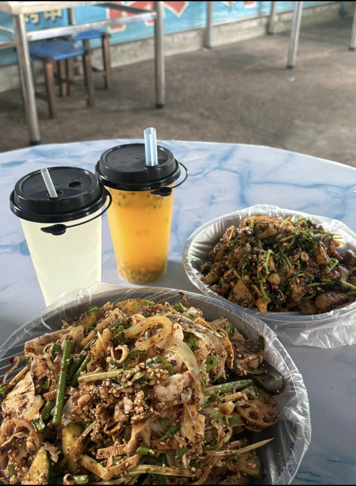主营各种凉拌菜和傣味小吃，特色是拌酸木瓜和拌米线。食材新鲜，调味酸辣开胃，适合作为开胃小菜或简餐。
饭店：
银家早点
银家早点
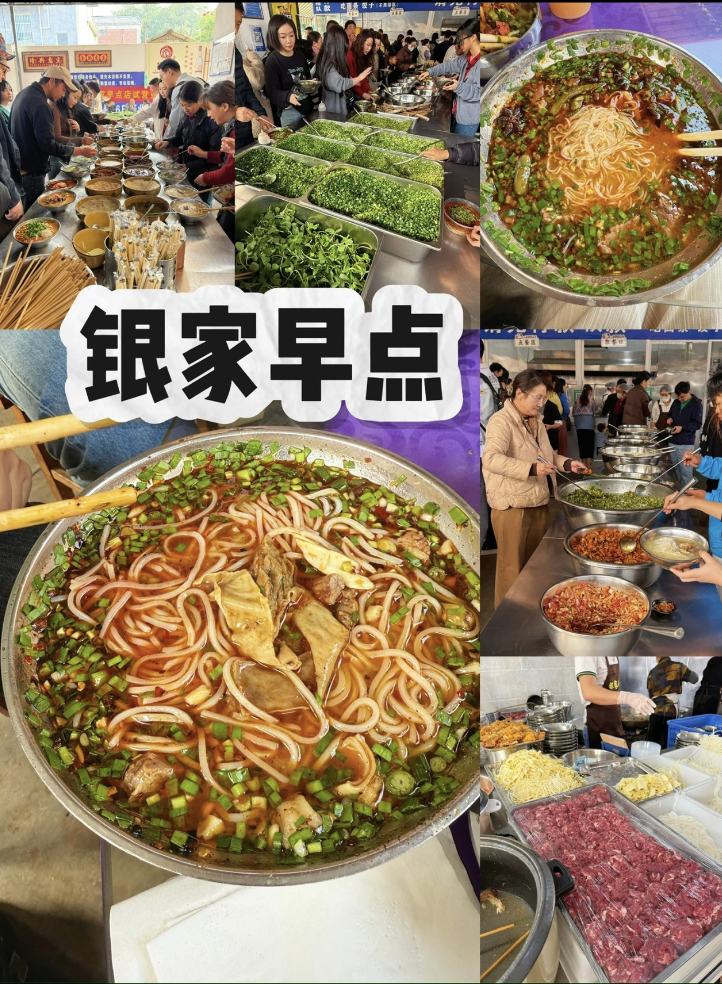芒市最受欢迎的早餐店之一，特色是稀豆粉和饵丝。稀豆粉是用豌豆磨浆煮成的糊状食物，可以搭配米线、饵丝或油条食用，是当地人最爱的早餐。
天然活螃蟹
天然活螃蟹
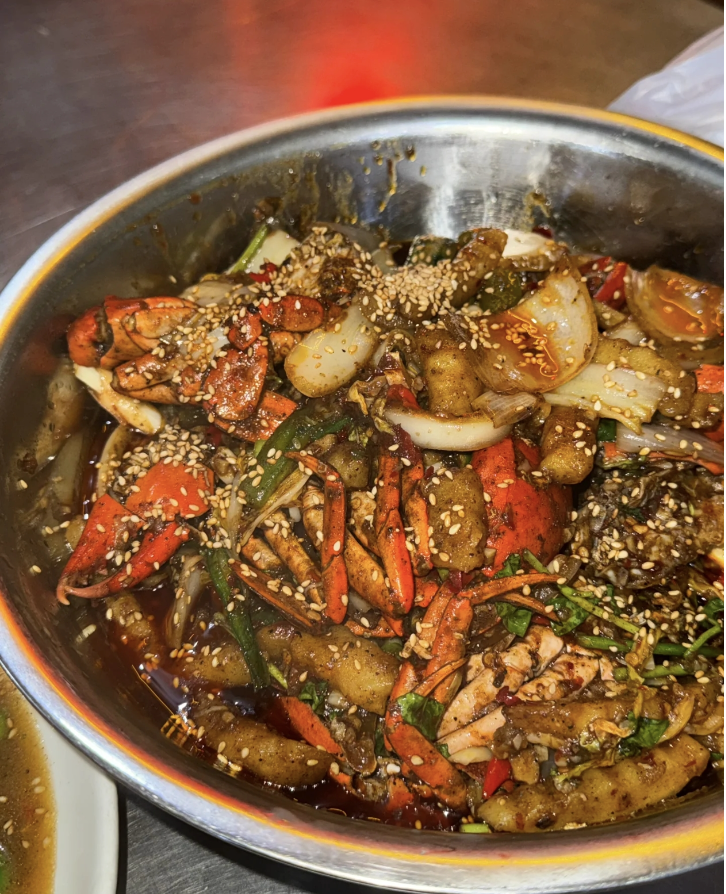主营各种螃蟹料理的餐厅，螃蟹现点现杀，保证新鲜。招牌菜有香辣蟹、咖喱蟹和清蒸蟹，蟹黄饱满，味道鲜美。价格稍高但物有所值。
热源食馆
热源食馆
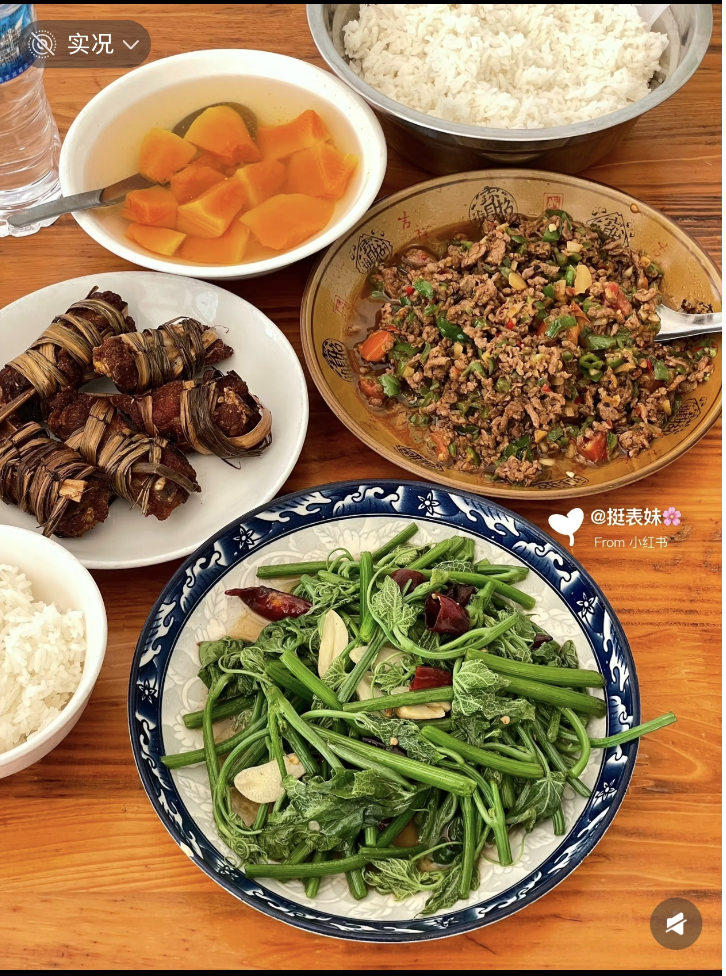提供家常炒菜和小锅菜的餐厅，菜品选择丰富，价格实惠。推荐他们的酸笋炒牛肉和苦瓜炒蛋，分量足，适合家庭用餐。
阿妙餐厅
阿妙餐厅
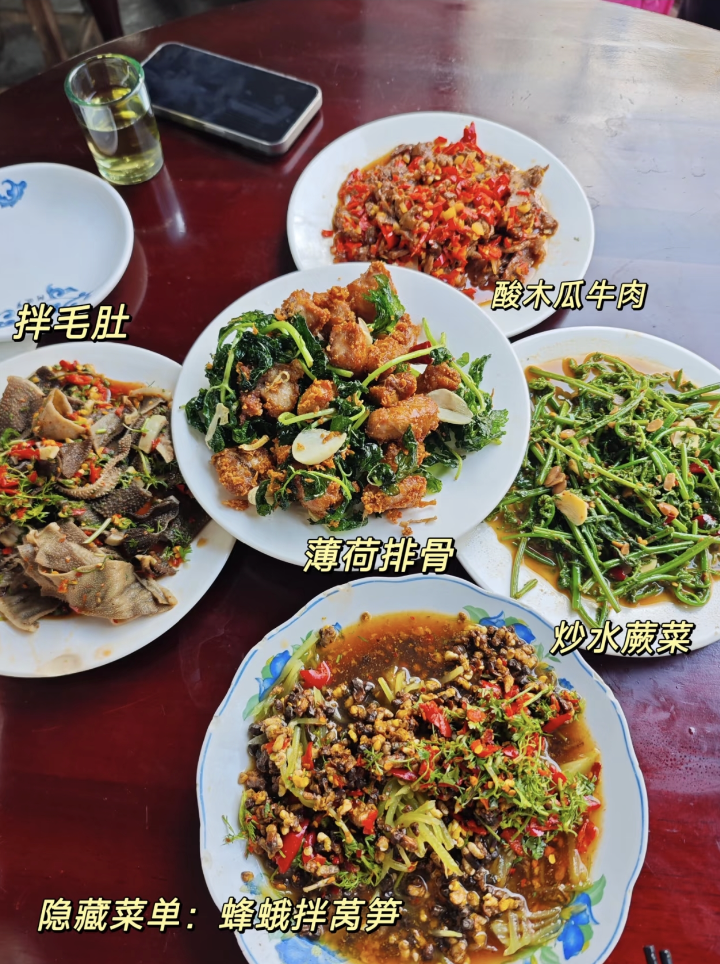环境优雅的中餐厅，菜品融合了傣族和汉族风味。招牌菜有柠檬撒撇、香茅草烤排骨和菠萝饭，摆盘精致，适合拍照。
胖强新派餐厅
胖强新派餐厅
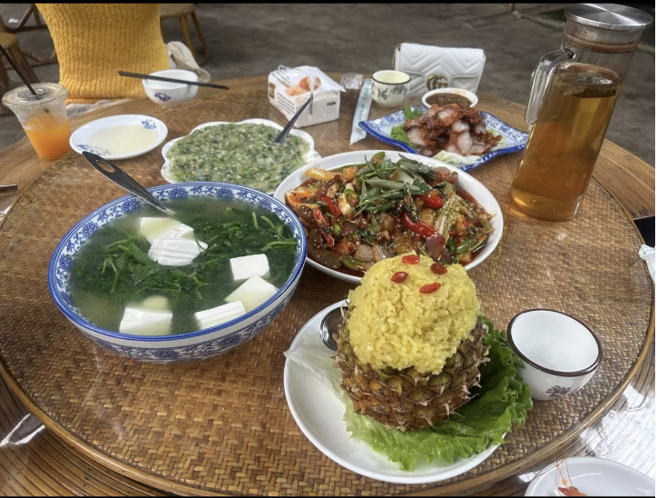创新融合菜餐厅，将传统傣味与现代烹饪手法结合。推荐尝试他们的傣味披萨和香茅草烤鸡，环境舒适，服务周到。
金英手抓饭店
金英手抓饭店
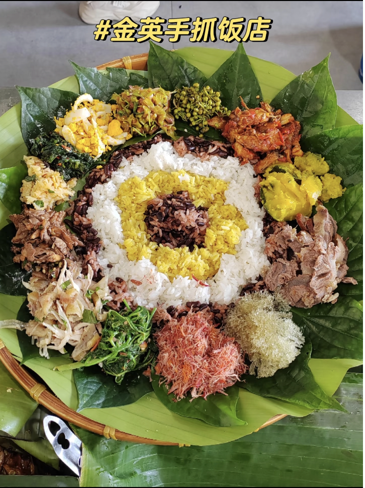提供正宗傣族手抓饭的餐厅，将米饭和各种配菜摆放在芭蕉叶上，用手抓着吃是当地传统。分量大，适合2-3人分享。
卢撒阿昌过手米线
户撒阿昌过手米线
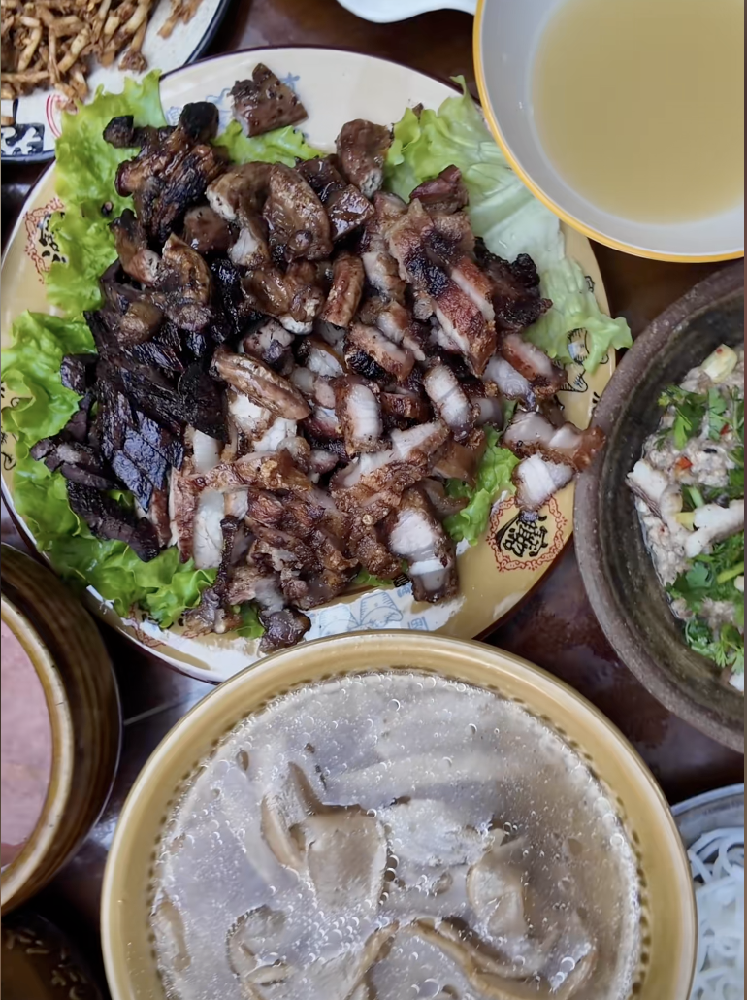专营蒙自过桥米线的小店，汤底用鸡骨和猪骨熬制数小时，味道鲜美。配料丰富，有鸡肉片、火腿、鹌鹑蛋等，米线可以免费续加。
甜点：
张变果饮
张变果饮
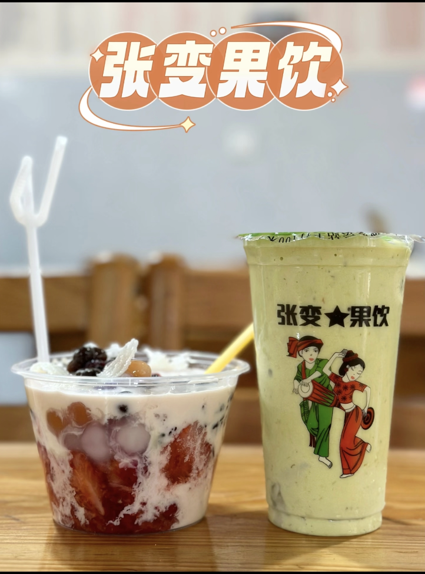芒市人气最高的果汁店，使用新鲜水果现榨，不添加糖精。招牌是牛油果奶昔和百香果汁，夏天还有各种水果冰沙供应。
鸡蛋甩粑粑
鸡蛋甩粑粑
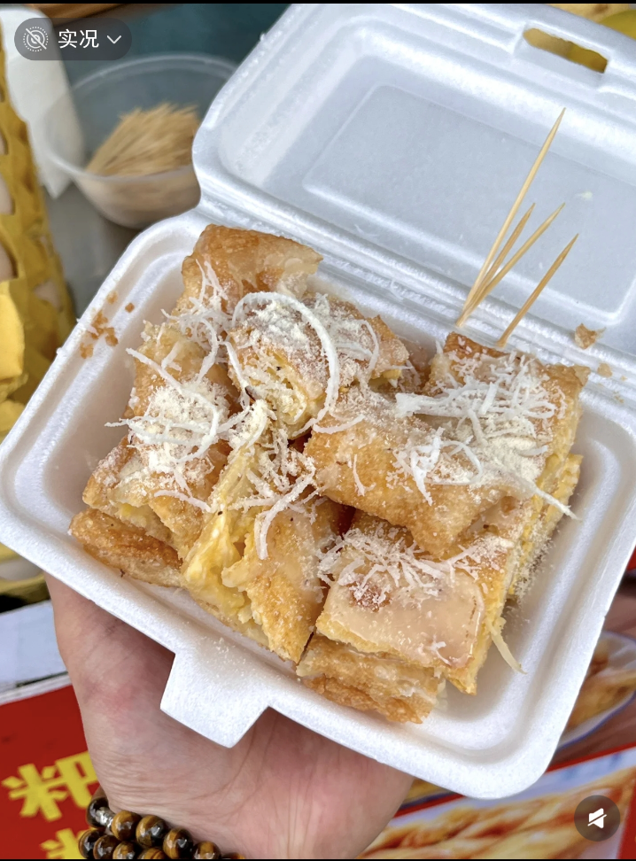傣族传统甜点，用鸡蛋和糯米粉制成，外酥里嫩，撒上白糖或炼乳食用。街头常见的小吃，现做现卖，热乎乎的最好吃。
松花糕
松花糕
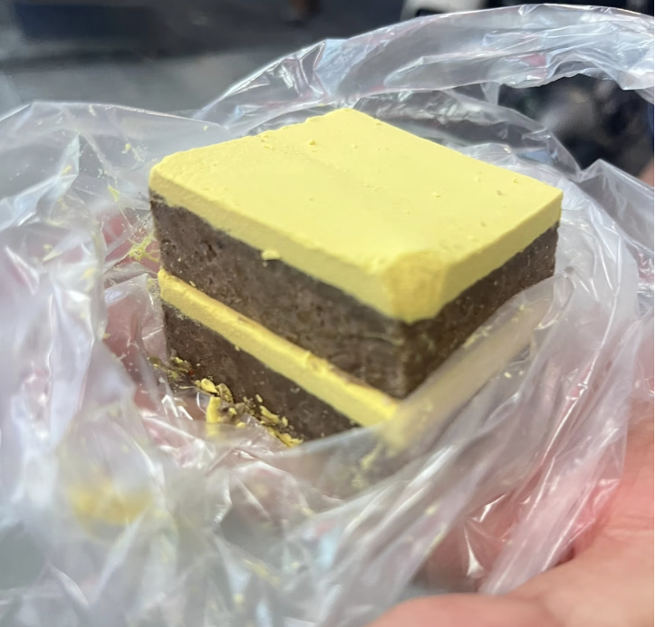用松花粉和糯米制成的传统糕点，口感软糯，带有淡淡的松树香气。通常在清明节前后才有，是季节性很强的特色甜点。
电动车租赁
城区多家电动车租赁点，约50-80元/天
推荐"傣乡电动车行"，提供古城周边骑行地图
贵阳 - 苗族侗族风情
观光景点
青岩古镇 - 明清军事古镇，石板路古建筑
甲秀楼 - 贵阳标志性古建筑
花溪公园 - 城市中的自然风光
美食推荐
酸汤鱼 - 贵州特色酸辣口味
肠旺面 - 贵阳特色早餐
丝娃娃 - 特色小吃，类似春卷
路况信息
城区道路高峰期较拥堵
通往周边景区高速公路状况良好
电动车租赁
市区有多家共享电动车可供使用
"黔行电动车"提供日租服务，60元/天
×

↑